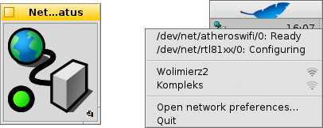

Ağ Durumu
Ağ Durumu
| Masaüstü Çubuğu: | ||
| Konum: | /boot/system/apps/NetworkStatus | |
| Ayarlar: | yok |
Ağ Durumu, ağ bağlantılarınızın durumunu gösterir. Henüz çalışmıyorsa uygulamacığı başlatmak pencere kipinde veya Masaüstü Çubuğu'nda açılması gerekip gerekmediğini sorar. Pencere kipinde, pencereyi yeniden boyutlandırarak istediğiniz gibi ayarlayabilirsiniz. Masaüstü'ne taşımak için shows Yinelenen tutacını kullanın.
Kurulu olduğu her konumda, sağ tık bağlam menüsü ile işletilir.

İlk balm, tüm ağ aygıtlarının yollarını ve durumlarını gösterir. Her bir girdiye tıklamak, ağın IP'si yayını ve ağ maskesi adresini gösterir.
Yukarıda, kablosuz bağdaştırıcısı tarafından bulunan tüm kablosuz ağların adı ve sinyal gücü gösterilmektedir. Nasıl bir bağlantı ayarlayacağınızı öğrenmek için Çalıştay: Kablosuz ağlar'a bakın.
Son olarak, ağ yapılandırmanızı değiştirmek için 'ı kullanabilir veya uygulamacıktan bilirsiniz.
Durum simgeleri
| Hazır | Bağlantı kuruldu. | ||
| Yapılandırılıyor | Bağlantı süreci sürüyor. | ||
| Durum yapılandırması yok | Bazı ayarlar eksik (IP yapılandırması'nı denetleyin). | ||
| Bağlantı yok | Fiziksel bir bağlantı yok (büyük olasılıkla ağ kablosu bağlı değil veya kablosuz ağlar kullanılamıyor). | ||
| - | Kullanılabilir ağ adaptörü yok (en azından bir tane var olduğundan eminseniz büyük olasılıkla sürücüsü yoktur). |